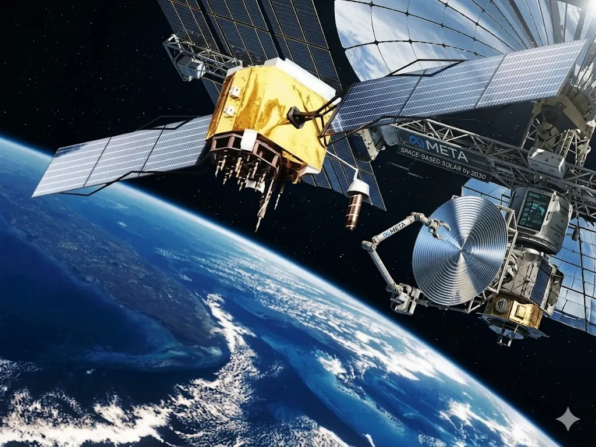

Meta Touts Space-Based Solar by 2030 in 'Long Shot' Deal with Tech Start-Up


Meta has signed a space-based solar power agreement with Virginia startup Overview Energy, reserving up to 1 gigawatt of capacity that Overview plans to beam down from orbit to Earth by 2030. The company's own vice president of energy called it a "transformative step forward." Latitude Media, which first reported the deal, called it a long shot. Both descriptions are accurate.
The agreement reflects something specific about where AI infrastructure is headed. Meta needs enormous amounts of electricity — reliably, continuously, and ideally without carbon — for the data centers running its AI models. Solar panels on the ground solve part of that problem. They don't solve the night, the clouds, or the winter. Space solar theoretically does. Whether Overview Energy can actually deliver it by 2030 is the question the industry will be watching.
Table of Contents
- Meta's Space-Based Solar Ambition: What the Deal Actually Says
- Who Is Overview Energy and Why Meta Chose Them
- How Space Solar Works: Converting Sunlight Into Beamed Power
- The Real Challenges: Cost, Physics, and the 2030 Timeline
- Why AI's Power Hunger Is Forcing Radical Energy Bets
- What Happens If It Works — and What Happens If It Doesn't
- Frequently Asked Questions
Meta's Space-Based Solar Ambition: What the Deal Actually Says
Meta has reserved up to 1 gigawatt of capacity from Overview Energy's planned orbital solar system. Nat Sahlstrom, Meta's vice president of energy and sustainability, described the technology as a way to "deliver new, uninterrupted energy from orbit" that complements existing ground-based solar farms rather than replacing them. The specific pitch is 24-hour generation — something ground solar cannot provide without extensive battery storage.
The financial terms were not disclosed. Meta has not confirmed whether it made any upfront investment in Overview Energy, what it expects the eventual cost per megawatt-hour to be, or what penalty clauses exist if Overview misses the 2030 delivery window. The announcement is a power purchase agreement reservation — not a funded project with confirmed hardware in orbit.
Meta also announced a separate deal with Palo Alto-based Noon Energy for 1 GW and 100 GWh of ultra-long-duration storage in the same release, suggesting the company is pursuing multiple parallel paths to solve the same problem: reliable clean power around the clock.
Who Is Overview Energy and Why Meta Chose Them
Overview Energy emerged from stealth mode alongside this announcement. The company is Virginia-based, has approximately 25 employees, 11 investors, and a total disclosed funding of around $3.7 million. For context, that is a seed-stage company. Its website listed a 2028 target for an energy transfer demonstration from low Earth orbit before the Meta announcement went public.
CEO Marc Berte framed Overview's approach as enabling technology companies to "secure clean power with reliable siting, and speed to power" — which is the infrastructure pitch, not the science pitch. The science pitch is that space solar is technically feasible and has been studied seriously since the 1970s. The problem has always been cost and scale, not concept.
Honestly, the $3.7 million figure is striking against the scale of what's being proposed. Building, launching, and operating a 1 GW orbital solar system would cost billions. Meta's involvement may be intended to help Overview raise that capital, but neither company has confirmed that interpretation.
Also Read
More Tech stories →How Space Solar Works: Converting Sunlight Into Beamed Power
The technical concept behind space-based solar is straightforward in principle. Solar panels in geostationary or low Earth orbit receive sunlight approximately 24 hours a day, unobstructed by atmosphere, clouds, or the Earth's rotation. That energy is converted into microwaves or infrared light and beamed to receiving antennas on the ground, where it is converted back into electricity.
Overview Energy specifically plans to use infrared light as the transmission medium. The efficiency chain involves three conversions: sunlight to electricity in orbit, electricity to infrared, and infrared back to electricity on the ground. Each step loses energy. The overall round-trip efficiency of space solar systems studied by the European Space Agency and the US Naval Research Laboratory has been estimated at roughly 10 to 20 percent — meaning 80 to 90 percent of the energy captured in orbit is lost before reaching the grid.
For comparison, grid-scale batteries charged by ground solar operate at 85 to 90 percent round-trip efficiency. The efficiency gap is the central technical challenge. Advocates argue that the continuous generation advantage — no nights, no weather, potentially six times more sunlight exposure than ground panels — compensates for the efficiency loss. Critics argue that rapidly falling battery costs make that math increasingly unfavorable for space solar.
Key Takeaways
- Meta has reserved 1 GW of space solar capacity from Overview Energy, targeting commercial delivery to the US by 2030, with an orbital demonstration planned for 2028.
- Overview Energy has approximately $3.7 million in disclosed funding — a stark contrast to the billions required to actually build and launch a gigawatt-scale orbital solar system.
- Space solar offers 24-hour generation unaffected by weather, but round-trip efficiency losses of 80–90% mean ground-based battery storage is currently more efficient per dollar at grid scale.
The Real Challenges: Cost, Physics, and the 2030 Timeline
No space solar project has ever achieved commercial-scale power delivery. The UK Space Energy Initiative, the European Space Agency's SOLARIS program, and several US Department of Defense research programs have all studied the concept seriously. None has launched a commercial system. The reasons are consistent: launch costs, the mass of equipment needed per watt of delivered power, and the efficiency losses described above.
Launch costs have fallen dramatically with SpaceX's Falcon 9 and Starship programs. That is the strongest argument for why now might be different. But falling launch costs change the economics incrementally — they don't eliminate the mass problem. A 1 GW space solar system requires an enormous amount of hardware in orbit, and assembling it reliably at that scale has never been demonstrated.
The 2030 timeline is four years away. Overview Energy needs to raise significant capital, design the system, manufacture the hardware, secure launch contracts, deploy the orbital infrastructure, demonstrate reliable power transmission, and connect it to Meta's grid-tied receiving infrastructure — all by then. Given the company's current size and funding, calling this a long shot is generous.
Why AI's Power Hunger Is Forcing Radical Energy Bets
Meta's interest in space solar is inseparable from the scale of electricity demand that AI infrastructure generates. Training and running large language models at the scale Meta operates — Llama models, AI recommendation systems, real-time content moderation — requires data centers drawing hundreds of megawatts continuously.
Meta itself acknowledged the problem directly: "Advancing AI at the speed and scale we're working toward requires more energy, but today's clean energy technologies have real limits: solar depends on sunlight, wind depends on weather, and the grid still needs more storage to make the most of both." That statement is accurate. It also explains why a company with Meta's resources would sign an agreement with a 25-person startup — because the conventional options aren't keeping pace with demand growth.
Other hyperscalers are making similar bets. Microsoft signed a nuclear power purchase agreement with Constellation Energy to restart Three Mile Island's Unit 1 reactor. Google has invested in geothermal. Amazon is funding advanced nuclear through X-energy. The pattern is consistent: when your power demand grows faster than available clean energy supply, you fund the next generation of supply.
What Happens If It Works — and What Happens If It Doesn't
If Overview Energy delivers 1 GW of continuous space solar power to Meta's infrastructure by 2030, it would be one of the most significant energy technology demonstrations in history. It would validate a concept studied since the Nixon administration, prove that orbital solar is economically viable at commercial scale, and almost certainly trigger a wave of similar projects from other hyperscalers and utilities worldwide.
If it doesn't deliver — which the current funding, timeline, and technical challenge profile make more probable — Meta's risk is relatively contained. A power purchase agreement reservation with no confirmed upfront capital is not a $10 billion commitment. The reputational cost of a failed long-shot energy bet is minimal for a company Meta's size. Overview Energy absorbs the operational risk. Meta absorbs the opportunity cost of the reservation.
The more interesting outcome is partial delivery — a small-scale demonstration that proves the physics but falls short of commercial scale. That result would likely attract the serious capital needed to take the technology further, with or without Meta's continued involvement.
Frequently Asked Questions
What is Meta's space-based solar project?
Meta signed a power purchase agreement with Virginia-based startup Overview Energy to reserve up to 1 gigawatt of electricity generated by solar panels in low Earth orbit. Overview will capture solar energy in space, convert it to infrared light, and beam it to ground receivers, with commercial delivery to the US targeted for 2030.
When will Meta's space solar power be operational?
Overview Energy is targeting an orbital demonstration by 2028 and commercial power delivery by 2030. Both timelines are ambitious given the company's current size — approximately 25 employees and $3.7 million in disclosed funding — and the technical complexity of building a gigawatt-scale orbital energy system.
Who is Overview Energy and what is its role in the Meta deal?
Overview Energy is a Virginia-based space technology startup that emerged from stealth alongside this announcement. It will design, launch, and operate the orbital solar infrastructure. The company had approximately $3.7 million in total funding as of the announcement, with 25 employees and 11 investors disclosed publicly.
How much space solar energy is Meta reserving?
Meta has reserved up to 1 gigawatt of capacity. The company has not disclosed the financial terms, any upfront investment in Overview Energy, or the expected cost per megawatt-hour. The deal is a capacity reservation, not a confirmed funded project with hardware in orbit.
Why is Meta investing in space-based solar power?
Meta's AI infrastructure requires continuous, large-scale clean electricity that ground-based solar cannot reliably provide around the clock. Space solar offers uninterrupted generation regardless of weather or time of day. Meta also announced a separate 1 GW ultra-long-duration storage deal with Noon Energy in the same release, indicating it is pursuing multiple solutions simultaneously.
Conclusion
Meta's space solar agreement with Overview Energy is a bet on a technology that has been technically plausible for decades but has never achieved commercial delivery. The deal is real. The timeline is aggressive. The company behind it is early-stage. All three things can be true simultaneously, and all three matter for evaluating what this announcement actually represents versus what the press release says it represents.
The clearest signal in the announcement isn't the space solar part. It's that Meta, one of the best-resourced technology companies on Earth, felt it necessary to sign agreements with a space startup and a long-duration storage company in the same week. That tells you something about how seriously the AI industry is taking its power supply problem — and how few easy answers remain on the ground.
Dr. Amara Singh
Senior Editor
Experienced journalist bringing you accurate, well-researched stories. Follow for the latest updates and in-depth coverage.
Leave a Comment